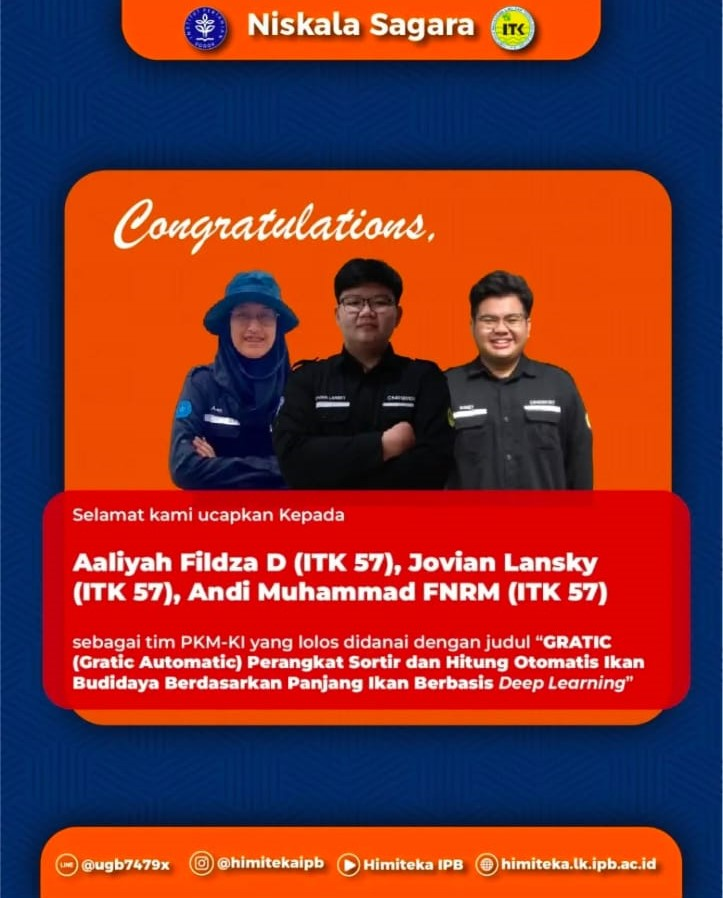

Projects
Kedaireka Internship (2023)
Team Leader in Program Studi Independen Junior Met-Ocean Data Analyst (Jr MODA) batch-2
Led a team of 9 in a month long independent study on mangrove areas in Dukuh Pandansari, Desa Kaliwlingi, Brebes Regency, Central Java
Creating team study outputs including reports and creative projects (documentary video, infographics, and presentations)
KKN-T Inovasi IPB (2023)
Team Leader in Kuliah Kerja Nyata Tematik IPB University
Led a team of 10 in a month long student program located in Desa Babakan, Kecamatan Dramaga, Bogor
Creating team study outputs including reports and creative projects (infographics, presentations, and website mockup)

Marine Instrumentation Telemetry and Robotics Club (2021-2024)
Programming Division and Internal Affairs Member Worked as a lead programmer with the development team in projects and competitions
Managed working environment and activities between club members
Competed in the Brawijaya University KTI (Karya Tulis Ilmiah) competition and entered the top 10 (2021)
Competed in the PKM-KC (Program Kreativitas Mahasiswa-Karsa Cipta) and got passed for funding (2023)
HIMPUNAN MAHASISWA ILMU DAN TEKNOLOGI KELAUTAN (2021-2022)
Bureau of Media and Information Member
Working as part of the journalistic team in charge of Ocean Magazine Vol. 11 - 13 (2022)
Assisted in graphic design for social media project